A Hans Christian Andersen tale • A bedtime story about a brave one-legged tin soldier, a paper dancer, and love that stays steadfast to the very end.
📖 15 Story Beats🎨 15 Storybook Watercolors🎙️ Voice Narration (8m 13s)🎬 Narrated Story Video👶 Ages 4–7
🎙️
Bedtime Voice Narration
Gentle, soothing narration matching the story text
0:008:13
Scene 1 • A Birthday Gift
There were once five-and-twenty tin soldiers. They were all brothers, born of the same old tin spoon. They shouldered their muskets and looked straight ahead of them, splendid in their uniforms, all red and blue.
The very first thing in the world that they heard was, “Tin soldiers!” A small boy shouted it and clapped his hands as the lid was lifted off their box on his birthday. He immediately set them up on the table.
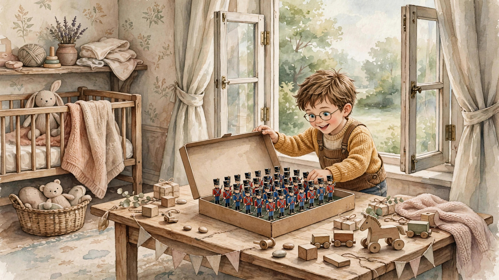
🔍 Zoom
Twenty-five tin soldiers, brothers of the same tin spoon.
Scene 2 • The One-Legged Soldier
All the soldiers looked exactly alike except one. He looked a little different as he had been cast last of all. The tin was short, so he had only one leg. But there he stood, as steady on one leg as any of the other soldiers on their two. But just you see, he'll be the remarkable one.
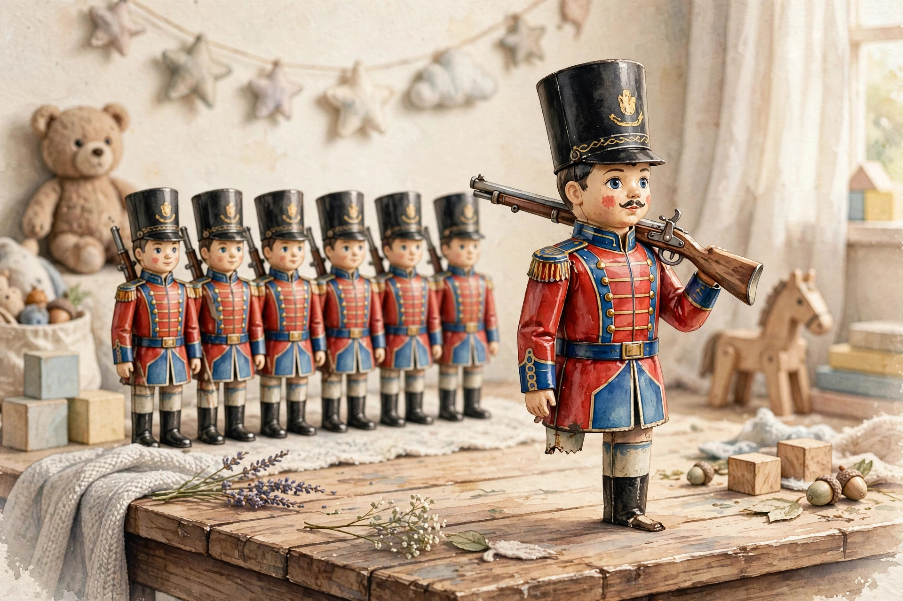
🔍 Zoom
One leg, but as steady as all the rest.
Scene 3 • The Paper Dancer
On the table with the soldiers were many other playthings, and one that no eye could miss was a marvelous castle of cardboard. It had little windows through which you could look right inside it. And in front of the castle were miniature trees around a little mirror supposed to represent a lake.
But prettiest of all was the little lady who stood in the open doorway of the castle. Though she was a paper doll, she wore a dress of the fluffiest gauze. A tiny blue ribbon went over her shoulder for a scarf, and in the middle of it shone a spangle that was as big as her face. The little lady held out both her arms, as a ballet dancer does, and one leg was lifted so high behind her that the tin soldier couldn't see it at all, and he supposed she must have only one leg, as he did.
“That would be a wife for me,” he thought.
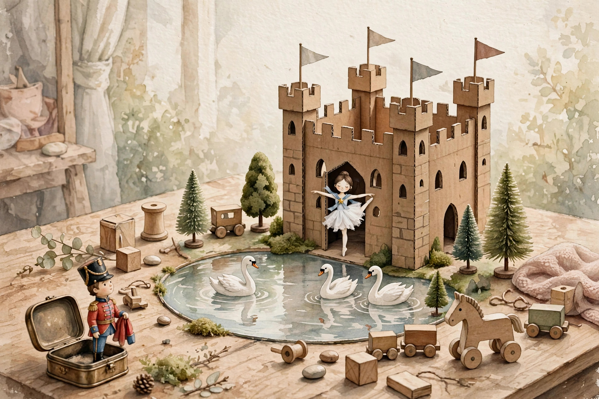
🔍 Zoom
“That would be a wife for me,” he thought.
Scene 4 • The Toys' Midnight Ball
When the evening came the other tin soldiers were put away in their box, and the people of the house went to bed. Now the toys began to play among themselves at visits, and battles, and at giving balls. The tin soldiers rattled about in their box, for they wanted to play too, but they could not get the lid open. The nutcracker turned somersaults, and the slate pencil squeaked out jokes on the slate. The toys made such a noise that they woke up the canary bird, who made them a speech, all in verse. The only two who stayed still were the tin soldier and the little dancer. Not once did he take his eyes off her.
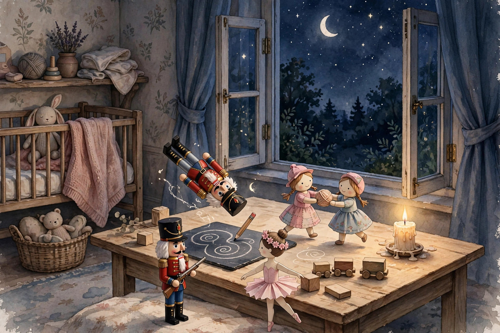
🔍 Zoom
The toys play — but the two stay still.
Scene 5 • The Bogey's Warning
Then the clock struck twelve and — clack! — up popped the lid of the snuffbox. But there was no snuff in it — out bounced a little black bogey, a jack-in-the-box.
🖤 The Bogey
“Tin soldier, will you please keep your eyes to yourself?” — “Just you wait till tomorrow.”
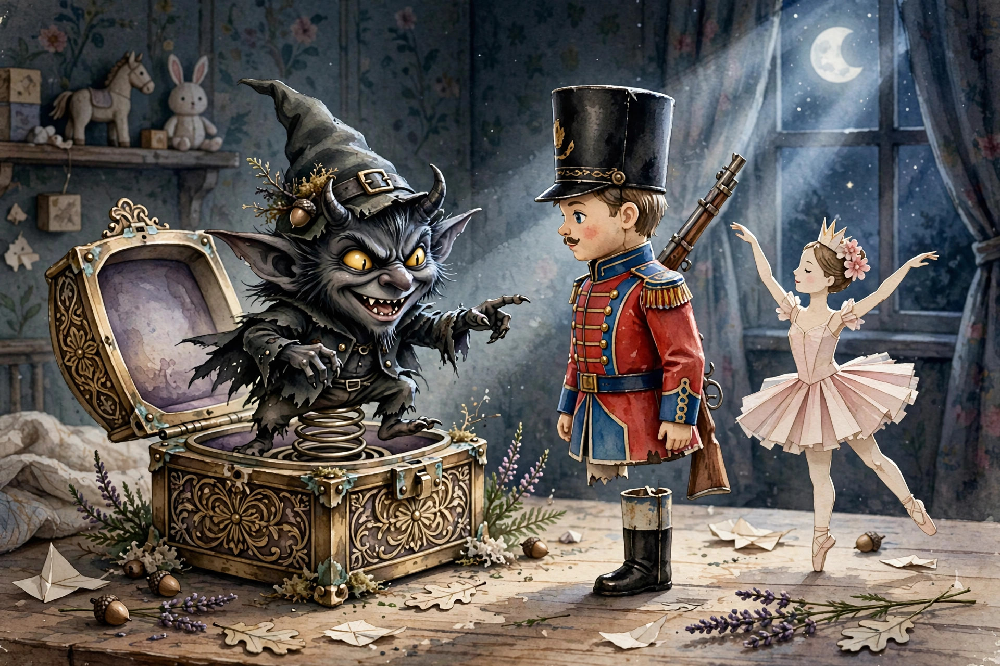
🔍 Zoom
“Just you wait till tomorrow.”
Scene 6 • Set on the Window Ledge
But when morning came, and the children got up, the soldier was set on the window ledge. And whether the bogey did it, or there was a gust of wind, all of a sudden the window flew open and the soldier pitched out headlong from the third floor.
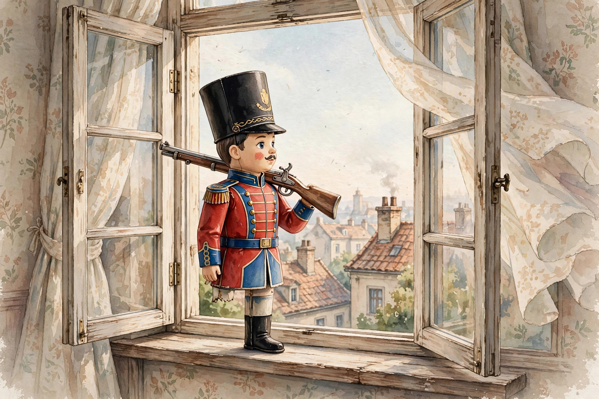
🔍 Zoom
The window flew open — and out he pitched.
Scene 7 • The Fall
He fell at breathtaking speed and landed cap first, with his bayonet buried between the paving stones and his one leg stuck straight in the air. The housemaid and the little boy ran down to look for him and, though they nearly stepped on the tin soldier, they walked right past without seeing him.
If the soldier had called, “Here I am!” they would surely have found him, but he thought it contemptible to raise an uproar while he was wearing his uniform.
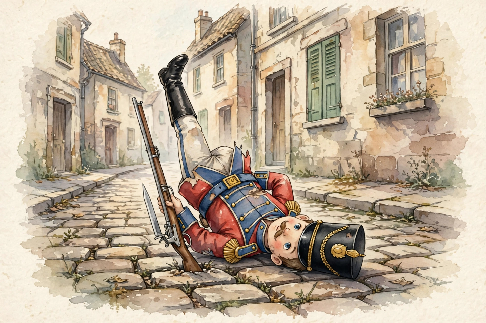
🔍 Zoom
Cap first between the paving stones — but he calls out to no one.
Scene 8 • Two Young Rapscallions
Soon it began to rain. The drops fell faster and faster, until they came down by the bucketful. As soon as the rain let up, along came two young rapscallions.
“Hi, look!” one of them said, “there's a tin soldier. Let's send him sailing.”
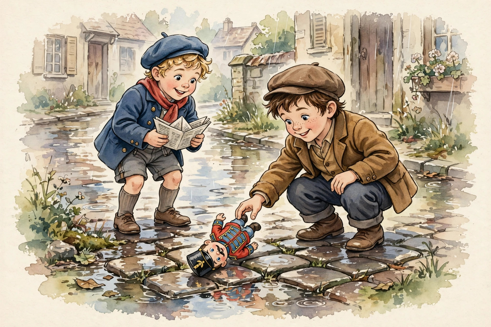
🔍 Zoom
“There's a tin soldier. Let's send him sailing.”
Scene 9 • The Paper Boat Voyage
They made a boat out of newspaper, put the tin soldier in the middle of it, and away he went down the gutter with the two young rapscallions running beside him and clapping their hands. High heavens! How the waves splashed, and how fast the water ran down the gutter.
The paper boat pitched, and tossed, and sometimes it whirled about so rapidly that it made the soldier's head spin. But he stood as steady as ever. Never once flinching, he kept his eyes front, and carried his gun shoulder-high.
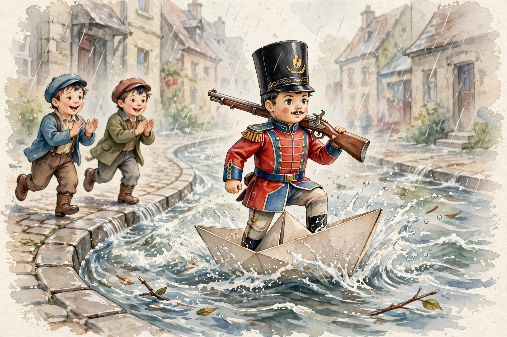
🔍 Zoom
He kept his eyes front, and carried his gun shoulder-high.
Scene 10 • Under the Dark Plank
Suddenly the boat rushed under a long plank where the gutter was boarded over. It was as dark as the soldier's own box.
“Where can I be going?” the soldier wondered. “This must be that black bogey's revenge. Ah! if only I had the little lady with me, it could be twice as dark here for all that I would care.”
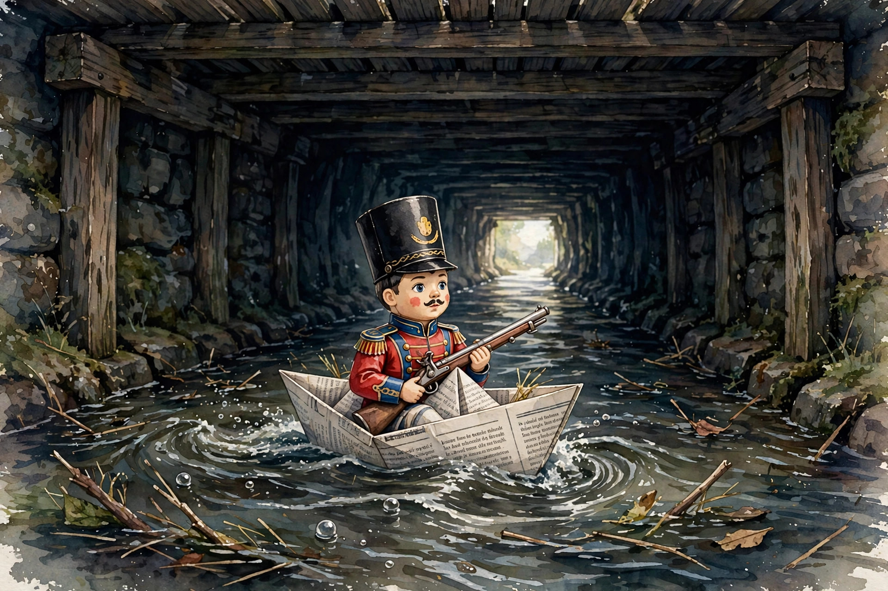
🔍 Zoom
“Where can I be going?”
Scene 11 • The Water Rat
Out popped a great water rat who lived under the gutter plank. “Have you a passport?” said the rat. “Hand it over.”
The soldier kept quiet and held his musket tighter. On rushed the boat, and the rat came right after it, gnashing his teeth as he called to the sticks and straws: “Halt him! Stop him! He didn't pay his toll. He hasn't shown his passport.”
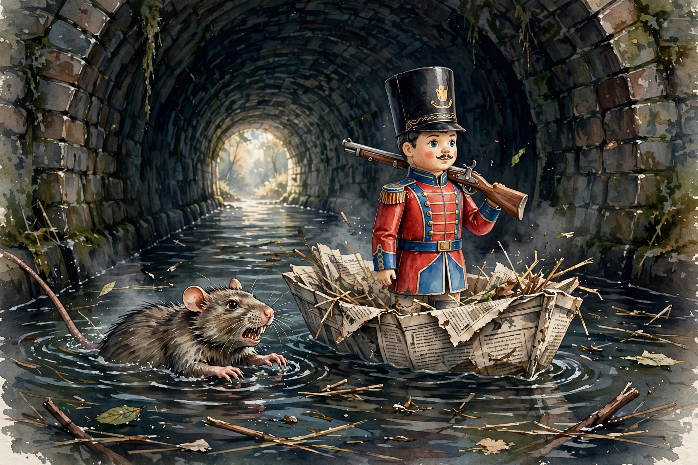
🔍 Zoom
“Have you a passport? Hand it over.”
Scene 12 • The Waterfall
The boat plunged into the whirlpool. The poor tin soldier stood as staunch as he could, and no one can say that he so much as blinked an eye. Thrice and again the boat spun around. It filled to the top — and was bound to sink. The water was up to his neck and still the boat went down, deeper, deeper, deeper, and the paper got soft and limp. Then the water rushed over his head.
He thought of the pretty little dancer whom he'd never see again, and in his ears rang an old, old song.
🎵 The Old Song
“Farewell, farewell, O warrior brave, nobody can from Death thee save.”
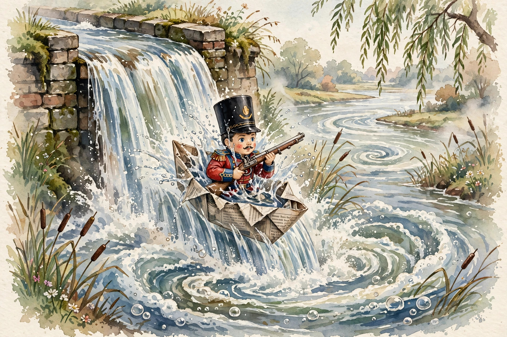
🔍 Zoom
Thrice and again the boat spun around.
Scene 13 • Swallowed by the Fish
And now the paper boat broke beneath him, and the soldier sank right through. And just at that moment he was swallowed by a most enormous fish.
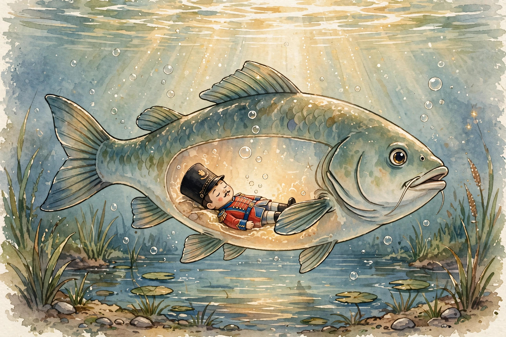
🔍 Zoom
Swallowed by a most enormous fish.
Scene 14 • Inside the Fish
My! how dark it was inside that fish. It was darker than under the gutter-plank and it was so cramped, but the tin soldier still was staunch. He lay there full length, soldier fashion, with musket to shoulder.
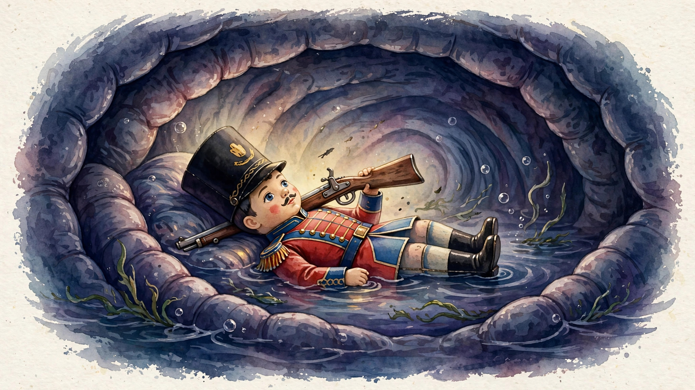
🔍 Zoom
Still was staunch — musket to shoulder.
Scene 15 • Daylight Again
Then the fish flopped and floundered in a most unaccountable way. Finally it was perfectly still, and after a while something struck through him like a flash of lightning. The tin soldier saw daylight again, and he heard a voice say, “The Tin Soldier!”
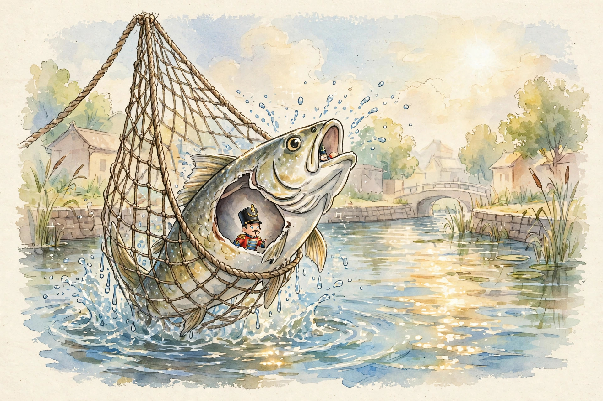
🔍 Zoom
“The Tin Soldier!”
Scene 16 • The Cook's Discovery
The fish had been caught, carried to market, bought, and brought to a kitchen where the cook cut him open with her big knife. She picked the soldier up bodily between her two fingers, and carried him off upstairs. Everyone wanted to see this remarkable traveler who had traveled about in a fish's stomach, but the tin soldier took no pride in it.
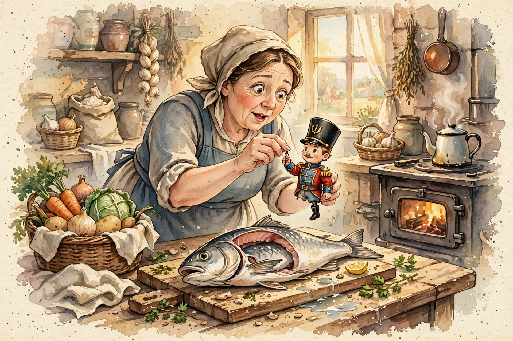
🔍 Zoom
The remarkable traveler, carried upstairs.
Scene 17 • Back Home
They put him on the table and — lo and behold, what curious things can happen in this world — there he was, back in the same room as before. He saw the same children, the same toys were on the table, and there was the same fine castle with the pretty little dancer. She still balanced on one leg, with the other raised high. She too was steadfast. That touched the soldier so deeply that he would have cried tin tears, only soldiers never cry. He looked at her, and she looked at him, and never a word was said.
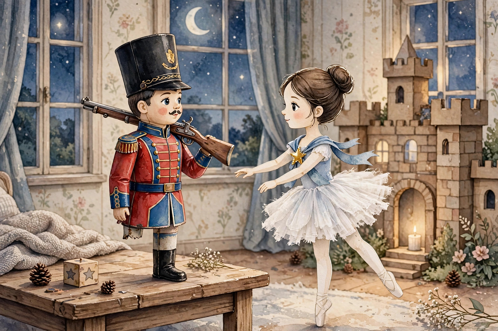
🔍 Zoom
She too was steadfast — and never a word was said.
Scene 18 • Thrown into the Stove
Just as things were going so nicely for them, one of the little boys snatched up the tin soldier and threw him into the stove. He did it for no reason at all. That black bogey in the snuffbox must have put him up to it. The tin soldier stood there dressed in flames.
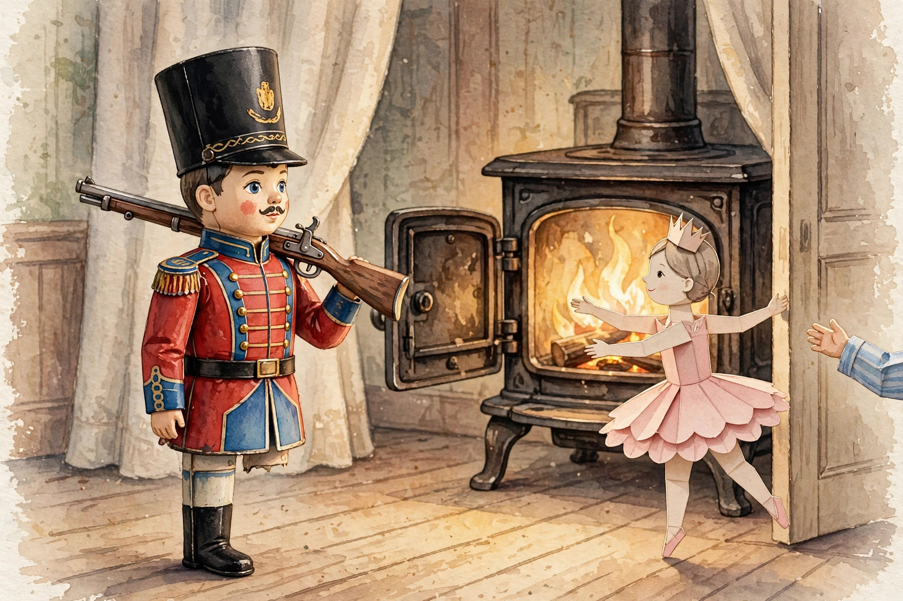
🔍 Zoom
The tin soldier stood there dressed in flames.
Scene 19 • The Dancer Joins Him
He felt a terrible heat, but whether it came from the flames or from his love he didn't know. He looked at the little lady, and she looked at him, and he felt himself melting. But still he stood steadfast, with his musket held trim on his shoulder.
Then the door blew open. A puff of wind struck the dancer. She flew like a sylph, straight into the fire with the soldier, blazed up in a flash, and was gone.
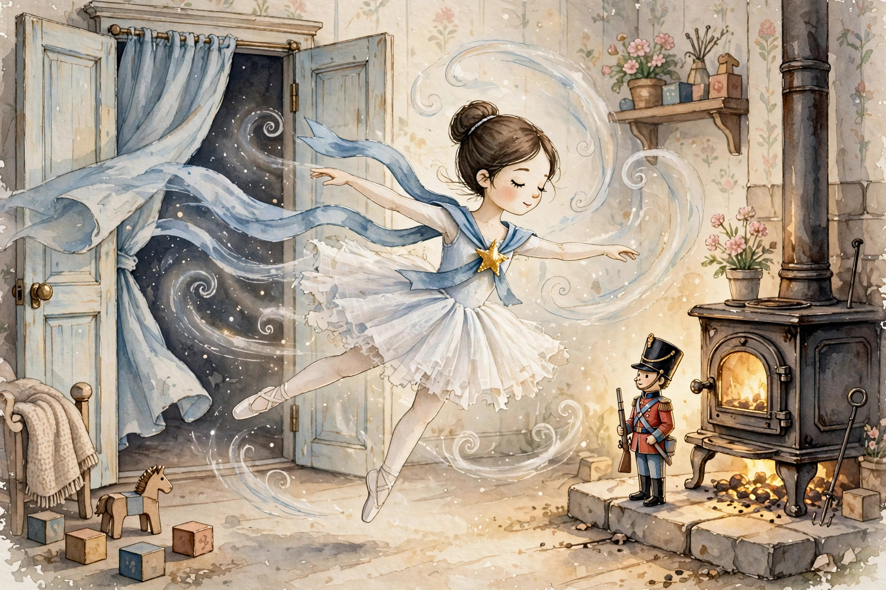
🔍 Zoom
She flew like a sylph, straight into the fire with the soldier.
Scene 20 • A Tin Heart
The tin soldier melted, all in a lump. The next day, when a servant took up the ashes she found him in the shape of a little tin heart. But of the pretty dancer nothing was left except her spangle, and it was burned as black as a coal. And that is the end of the tale.
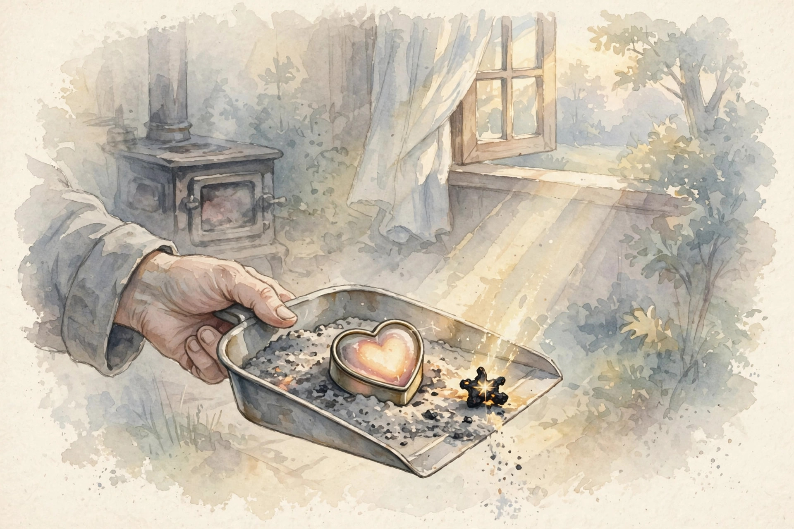
🔍 Zoom
A little tin heart — and a blackened spangle.💭 Bedtime Chat
What does it mean to be steadfast, like the tin soldier?
💛Stand FirmThe tin soldier never wavered — not in the gutter, not in the fish, not in the stove. Staying brave and true when things are hard is what makes a hero.
💃Steadfast Hearts Find Each OtherThe little dancer was steadfast too, and in the end they were together. Kind, brave hearts always find each other.
🎬 Watch & Listen
The Steadfast Tin Soldier — Full Story Video
Watch all 15 watercolor storybook illustrations paired with spoken neural voice narration and synchronized subtitles.